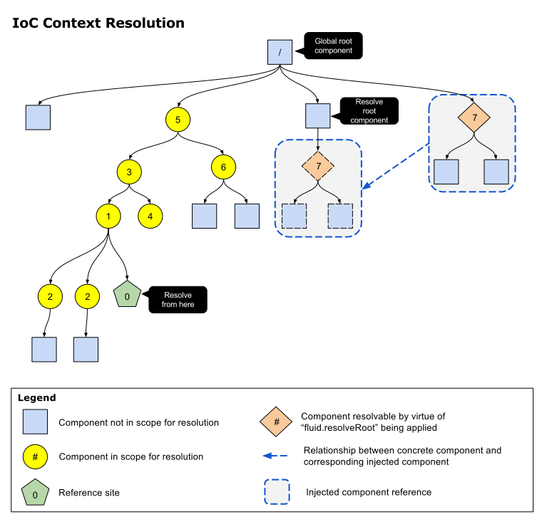

Components may have different requirements depending on the context in which they are operating. For example, a subcomponent might operate differently when running on a production server versus when testing locally off the file system, and differently still when operating in the context of automated tests. In a more fine-grained way, a component may behave differently when operating in a browser with different capabilities, or on behalf of a user who has expressed particular needs or preferences. Infusion's IoC system allows the values and behaviour attached to components to be responsive to their context, conditioned by the visibility of certain strings known as context names at locations in the component tree. Each component in the tree exposes a collection of these context names, which are derived from the component's type and grade names.
All Infusion components are stored in a single-rooted component tree - this stores every component which has been instantiated in a particular Infusion context. This context is global to the JavaScript context which has loaded Infusion - for example, a frame within a browser, or a node.js process.
How context names are derived
Configuration material makes use of context names, when it is expanding.
IoC References are strings formatted in a particular way, starting with a context
expression contained in curly brackets. The context expression may consist of just a single context name,
or else it may take the form of an IoCSS selector which may mention several context names.
Context names are derived both from particular components in the tree which have already instantiated
(ancestors) and the static environment. The static environment can be thought of as a set of
contexts which are global to the entire application (that is, a context managed by the JavaScript
virtual machine operated by the runtime - for example that derived from a browser frame or
V8 context). These names can be matched by the
names appearing in curly brackets at the beginning of EL path expressions like
"{contextName}.furtherPath". Each component in the tree can give rise to a context name through
three strategies:
- The fully qualified name typeName or gradeNames of the component that is found in the context,
e.g.
"fluid.uploader.progressiveStrategy" - The last path segment of any of the names from strategy 1 (e.g.
progressiveStrategy) - The component's name when embedded within its own parent, e.g.
"strategy"- this strategy is not available for components at the head of the tree. It is also the most unstable strategy since it depends on particular naming of members in the tree rather than remaining stable if the tree is reorganised. However, it is the only route for matching a particular instance of a component rather than matching components by their type or name in general.
How context names are matched
The rules for matching a context expression onto one or more components in the tree differ according to the kind of expression it is. Expressions which just consist of a single context name will match upwards - searching from the reference point into enclosing scopes as described in the following section. Expressions which contain a space are recognised as IoCSS expressions which will match downwards in the tree as described on their own page. Currently, these more complex expressions may only appear in a component's configuration in the top-level area named distributeOptions. Regardless of the direction of search, the rules for matching context names at a particular component location in the tree are the same, as described in the previous section.
Where context names are looked for
Context names listed in a configuration are searched for at instantiation time, sequentially, in two kinds of "scopes" or "environments".
- Most immediately, context names are searched for in the tree of currently instantiating components, searching upwards through the tree from the parent of the component where the context name is held.
- Following this, a search is made in the resolver root, which is notionally a separate tree
of components which holds all components which has been instantiated with the grade
fluid.resolveRoot(see below) anywhere in the current component tree.

Global components: fluid.resolveRoot and fluid.resolveRootSingle
All Infusion components are stored in a single-rooted, global component tree. Even when you instantiate apparently "freely-floating" components with a line such as
var that = fluid.myComponent();
these components are also assigned an address in the global tree - they are stored as immediate children of the global component root with a uniquely chosen name. Naturally the default visibility rules for these components in the component tree have to work differently for these components than they do for nested components described by the rules above. If every such component was in scope for every other, there would be "global chaos", to coin a phrase. So all such "free components" are hidden from each other through a special exception in the scoping rules.
However, there exist several cases when genuinely global visibility is required for some components - often this is accompanied by what is termed a Singleton Design Pattern in prevalent "Design Patterns" dialogue. As commonly described, this pattern consists of two elements -
- Arranging for global visibility of a component (object)
- Arrange for there to be a single instance of a component
The Infusion framework supplies two special grades, which allow the designer to arrange for both of these
points to be controlled separately. For a start, any component which is supplied the grade fluid.resolveRoot,
wherever it is constructed in the component tree, will become globally visible throughout the component
tree, as if it had been constructed at its root. Secondly, a component which uses the grade
fluid.resolveRootSingle will be able to arrange that a single instance of it is globally visible at any
time. Constructing a further instance of such a component will displace the earlier instance from global
visibility (although it will not destroy it at its original location in the tree). Using the grade fluid.resolveRootSingle
requires an option named singleRootType to be defined in the defaults, holding the global type name with
respect to which the instance is required to be unique. This needs to be listed explicitly since otherwise the
framework would not be able to tell which of the component's gradeNames or type was intended to hold the name of the
type whose instance was expected to be unique.
| Grade Name | Ensures Global Visibility | Behaviour on Constructing Fresh Instance |
|---|---|---|
fluid.resolveRoot |
Yes | Each fresh instance is made globally visible |
fluid.resolveRootSingle |
Yes |
A fresh instance that holds the same value of the option singleRootType displaces the
previous one from global visibility (but does not destroy it)
|
For example, the following code is an error, since that2 cannot see the component that with context name freeComponent1.
fluid.defaults("examples.freeComponent1", {
gradeNames: ["fluid.component"],
freeValue: 42
});
var that = examples.freeComponent1();
var that2 = fluid.component({
value: "{freeComponent1}.options.freeValue" // error: though global, freeComponent1 is not resolvable
});
However, in the following example, since rootComponent1 has the grade fluid.resolveRootSingle, the instance root1
can be seen by the second component. In addition, since it has fluid.resolveRootSingle rather than just
fluid.resolveRoot, when we create a second instance of it, this instance becomes the globally visible one.
Note: In general, users must take care to destroy all such "free components" manually when they are
no longer required. Since JavaScript does not supply schemes for reference tracking, there is no way for the
framework to determine when a component is no longer being used. The user must call destroy() on such instances
themselves.
fluid.defaults("examples.rootComponent1", {
gradeNames: ["fluid.component", "fluid.resolveRootSingle"],
singleRootType: "examples.rootComponent1",
rootValue: 42
});
fluid.defaults("examples.rootFinder", {
gradeNames: ["fluid.component"],
value: "{rootComponent1}.options.rootValue"
});
var root1 = examples.rootComponent1();
var that1 = examples.rootFinder();
console.log("Resolved root value: " + that1.options.value);
// OK: Receives 42 from resolveRootSingle component
var root2 = examples.rootComponent1({ // construct a fresh instance, displacing the original
rootValue: 43
});
var that2 = examples.rootFinder();
console.log("Resolved root value: " + that2.options.value);
// OK: Receives 43 from resolveRootSingle component
root1.destroy(); // clean up all our free components
that1.destroy();
root2.destroy();
that2.destroy();
Allowing a component to adapt to its context
There are three principal routes that a component can be influenced by its context, listed from the most straightforward to the most heavyweight:
- Firstly, a component can simply include a contextualised reference in its configuration, as we saw above - e.g.
{rootComponent1}.options.rootValue. This value is fetched from the specified part of the context and becomes part of the component's options when it is instantiated - Secondly, an options distribution can be targeted at the component from elsewhere in the tree, using the IoCSS context expressions described above.
- Thirdly, the component can derive from the
fluid.contextAwaregrade in order to set up complex arbitration amongst multiple sources of context which can influence the component along several axes simultaneously.